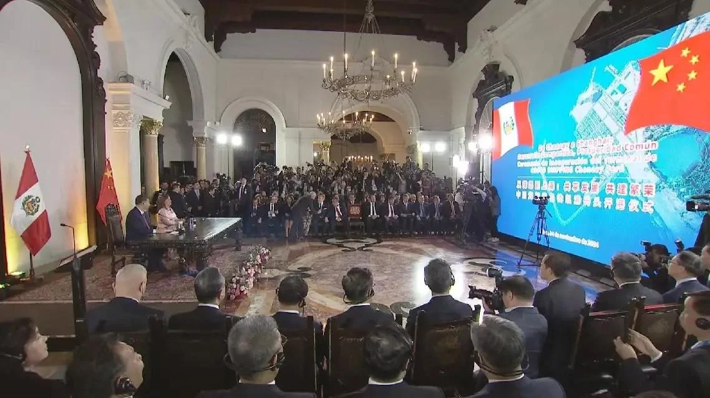
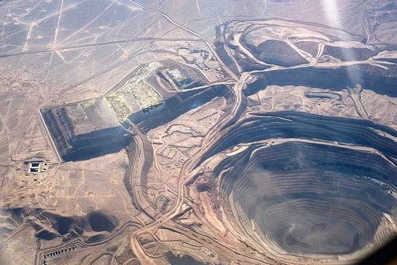
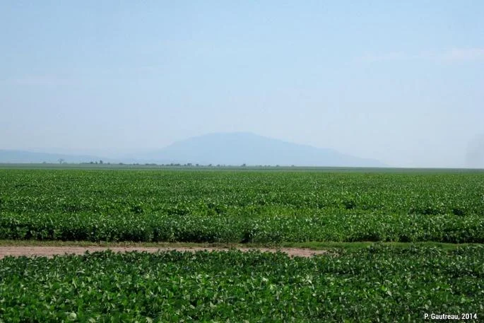

Décolonisée dans les premières décennies du XIXe siècle, l'Amérique latine est devenue un laboratoire de la pensée économique du développement. Depuis les indépendances, ses gouvernements ont expérimenté plusieurs modèles, du marxisme au libéralisme, pour rattraper les pays développés : une « valse des paradigmes », selon l'économiste Javier Santiso (Amérique latine. Révolutionnaire, libérale, pragmatique, 2005).
La plupart des pays ont atteint le statut de pays à revenu intermédiaire, mais leurs stratégies ont été systématiquement stoppées par des crises sévères.
Au sens large (d'où le pluriel « crises »), un événement brutal, une rupture sur un temps très court, mais aussi une évolution longue qui révèle les faiblesses d'un système (crise du logement…). Elle s'accompagne d'une bifurcation. En grec ancien, krisis signifie la décision (du verbe krinein, « juger », « trier ») : dans la tragédie grecque, c'est le moment de vérité où un tri s'opère et entraîne un changement profond.
Le sociologue Edgar Morin relève un retournement complet du sens : le mot qui désignait le moment décisif d'un processus incertain en vient à désigner son contraire.
« Crise signifie indécision : c'est le moment où, en même temps qu'une perturbation, surgissent les incertitudes »Edgar Morin
🌍 Le Brésil parmi les BRICS
Le géant brésilien forme avec la Russie, l'Inde, la Chine puis l'Afrique du Sud le groupe des BRICS, pour rivaliser avec le G7 et accompagner le « basculement du monde » (Laurent Carroué).
🐆 Les « jaguars »
Les « jaguars » latino-américains semblent rattraper les « dragons » et les « tigres » asiatiques dans la mondialisation.
Processus par lequel un État s'intègre à l'économie mondialisée grâce à une forte croissance du PIB pendant plusieurs années (Géoconfluences). Le terme vient de la finance : l'expression « marchés émergents » est forgée en 1981 par Antoine van Agtmael, économiste de la Société financière internationale (Banque mondiale), pour désigner des marchés attractifs pour les investisseurs. L'émergence est plus économique que sociale : elle peut ne pas améliorer la vie des plus pauvres, voire accroître les inégalités.
Pour Laurence Daziano (Les pays émergents. Approche géoéconomique, 2014), cinq critères définissent l'émergence :
Un taux de croissance d'au moins 5 % par an (critère formulé en 2014).
La croissance fait naître une classe moyenne qui consomme.
L'essor des villes accompagne celui de l'économie.
Les émergents s'appuient d'abord sur leur marché intérieur.
Des réseaux, logistiques notamment, pour s'intégrer à la mondialisation.
La conjoncture se retourne en 2014 avec le ralentissement de la demande chinoise, puis la pandémie de Covid-19 frappe durement la région en 2020. La croissance tombe à 0,2 % par an entre 2014 et 2020 : la CEPAL et le FMI craignent une « nouvelle décennie perdue » pour le développement.
Le géopolitologue Dominique Moïsi voit alors dans l'Amérique latine « le plus désespéré peut-être des continents » (Institut Montaigne, 2020).
Comment expliquer que l'Amérique latine, indépendante de longue date, riche en ressources naturelles, ayant achevé sa transition démographique et comptant plus de 80 % d'urbains, semble devoir reporter sans cesse son entrée dans le club des pays développés ? Dans quelle mesure le modèle agro-minier exportateur, qui façonne la région depuis son intégration au système-monde au XVIe siècle, est-il à la fois un moteur et un frein à son émergence ?
Pour le géohistorien Christian Grataloup, la « découverte » de l'Amérique permet le « bouclage du monde » : elle marque le point de départ de la mondialisation. Mais l'Amérique latine est d'emblée condamnée à devenir une périphérie dominée et exploitée (Alain Reynaud), un réservoir de matières premières pour le décollage de l'Europe occidentale, puis de l'Amérique du Nord.
Dans Les Veines ouvertes de l'Amérique latine (1971), l'écrivain uruguayen Eduardo Galeano raconte ce pillage des ressources, par les empires coloniaux européens (XVIe-XVIIIe siècles) puis par les États impérialistes (XIXe-XXe siècles).

La mine, premier pilier du système colonial. La quête de l'El Dorado, contrée mythique censée regorger d'or, pousse à la conquête au XVIe siècle. Elle échoue, mais les Espagnols découvrent de vastes gisements d'argent, comme ceux du Cerro Rico de Potosí (actuelle Bolivie), exploités dès 1545 grâce au travail forcé des Amérindiens.
Au Brésil, l'activité minière donne même son nom à un État : le Minas Gerais (« mines générales »).
La plantation, second pilier. L'Amérique centrale, les Caraïbes et le Brésil se couvrent de plantations de sucre, de coton, de café et de bananes. Les esclaves africains de la traite y remplacent une main-d'œuvre autochtone décimée par le choc microbien, les violences de la conquête et le travail forcé.
Ce système colonial extractiviste produit une société inégalitaire et organise le territoire : les réseaux de transport se déploient en éventail depuis les ports d'exportation du littoral vers les mines et les plantations.
Le géographe Hervé Théry montre qu'au Brésil, le peuplement et la conquête du territoire suivent une succession de cycles, chacun fondé sur une ressource :
Le pau-brasil, bois rouge des forêts littorales du Nord-Est, donne son nom au pays.
Les plantations esclavagistes du Nordeste.
La ruée vers l'or du Minas Gerais.
La région de São Paulo, mise en valeur par les pionniers étudiés par Pierre Monbeig (Pionniers et planteurs de São Paulo, 1952).
Ce système dégage un surplus considérable, d'autant que le travail n'est pas rémunéré, mais sans développement local : les bénéfices restent dans les secteurs exportateurs, sont rapatriés en Europe ou dilapidés par les élites ibériques et créoles, qui importent des produits manufacturés européens.
Après les indépendances et l'abolition de l'esclavage, l'économie de traite devient une économie de rente : via les droits de douane, les exportations de matières premières brutes fournissent l'essentiel des recettes des États.
Modèle de développement hérité de la colonisation, fondé sur l'exportation de matières premières brutes, agricoles et minières, vers les pays industrialisés, en échange de produits manufacturés. Il fonde l'insertion originelle de l'Amérique latine dans la mondialisation.
La Première Guerre mondiale, puis la Grande Dépression des années 1930, déstabilisent profondément ces économies : l'effondrement de la demande américaine et européenne entraîne la chute des cours des matières premières.
Intégrée de force à la mondialisation dès le XVIe siècle, l'Amérique latine y entre comme périphérie pourvoyeuse de matières premières. Le modèle agro-minier exportateur enrichit les métropoles et les élites sans développer le territoire, et rend les économies vulnérables aux retournements des cours.
La crise des années 1930 révèle la vulnérabilité du modèle agro-minier. Les États élaborent une stratégie autocentrée : stimuler la production industrielle nationale pour satisfaire la demande intérieure et réduire la dépendance envers l'étranger.
Elle est portée par des dirigeants nationalistes et populistes, Getúlio Vargas au Brésil (1930-1945, puis 1951-1954), Juan Perón en Argentine (1946-1955), Lázaro Cárdenas au Mexique (1934-1940), et par les économistes de la CEPAL (Commission économique pour l'Amérique latine, créée par l'ONU en 1948).
Dans Le Développement économique de l'Amérique latine et ses principaux problèmes, il rejette les thèses libérales de David Ricardo sur l'intérêt de la division internationale du travail. La spécialisation primaire appauvrit le pays qui la choisit : à long terme, ses exportations de matières premières brutes ne lui permettent plus de payer ses importations de biens manufacturés, à plus forte valeur ajoutée.
C'est la « détérioration des termes de l'échange ».
Stratégie préconisée par la CEPAL : limiter l'achat de produits manufacturés étrangers par une hausse massive, mais sélective et évolutive, des droits de douane, un protectionnisme éducateur. La demande intérieure doit faire naître une industrie de biens de consommation, puis de biens intermédiaires, par une « remontée des filières ».
Pour mettre en œuvre cette stratégie, les États se font interventionnistes :
Le Chili crée dès 1939 la CORFO (Corporación de Fomento de la Producción), chargée de développer l'industrie nationale, à l'origine de nombreuses entreprises publiques.
En 1938, Cárdenas exproprie les compagnies américaines et britanniques et crée Pemex, pilier de l'industrialisation : énergie bon marché, recettes fiscales, emplois bien payés. Suivent Petrobras au Brésil (1953) et PDVSA au Venezuela (1975).
Faute de capitaux nationaux suffisants, les investissements directs étrangers restent indispensables, attirés par la taille du marché et des droits de douane sélectifs.
Il s'agit de diffuser la modernité vers l'intérieur et de rééquilibrer des territoires polarisés par les littoraux.
Pour attirer les constructeurs automobiles, Juscelino Kubitschek taxe les voitures importées, mais pas les machines-outils ni les biens intermédiaires, et avantage les firmes qui intègrent des composants fabriqués sur place. Attirées par la taille du marché, elles jouent le jeu : Volkswagen ouvre son usine de São Bernardo do Campo en 1959, Fiat s'installe en 1976 (Ford et General Motors étaient là depuis les années 1920). São Paulo devient un pôle automobile, entouré d'équipementiers brésiliens. Le même système fait naître Embraer (1969), aujourd'hui 3e avionneur mondial, que Boeing a voulu racheter en 2018 avant de renoncer en 2020.
Kubitschek avait promis « 50 ans de progrès en 5 ans ». Il fait bâtir une nouvelle capitale au cœur des savanes du plateau central : Brasília, construite de 1956 à 1960 sur les plans des architectes modernistes Oscar Niemeyer et Lúcio Costa.
Inaugurée le 21 avril 1960, la ville dessine en plan un avion ou un oiseau, le Plan pilote : l'axe monumental, où siègent les pouvoirs, y croise l'axe résidentiel des superquadras. Le chantier est une aubaine pour les entreprises nationales du BTP et doit tourner le pays vers ses terres intérieures, encore très peu peuplées.
📈 Des « Quarante Glorieuses »
L'ISI apporte une croissance dynamique (6 % par an dans les années 1970) : ce sont les « Quarante Glorieuses » (Pierre Salama, 2016), de 1935 aux années 1970, avec le « miracle brésilien » des années 1960-1970. Le Mexique et le Brésil deviennent des pays semi-industrialisés.
⚠️ Des limites lourdes
L'hypertrophie de l'État et sa bureaucratie freinent la croissance. L'imbrication des milieux politiques et d'affaires favorise la corruption. Surtout, la stratégie coûte cher : infrastructures, soutien des salaires, importation de biens d'équipement de plus en plus sophistiqués, alors que les exportations stagnent.
L'enquête « Lavage express » met au jour un système de corruption tentaculaire : surfacturation des contrats de Petrobras au profit des géants du BTP, comme Odebrecht, et financement des grands partis, dont le Parti des travailleurs de Lula. Elle illustre les dérives de l'imbrication entre État et grandes entreprises.
Les États doivent emprunter massivement : de 1970 à 1980, la dette latino-américaine est multipliée par six.
Dans les années 1980, la chute des cours et la hausse des taux d'intérêt américains rendent la dette insupportable. En août 1982, le Mexique est le premier pays à faire défaut, suivi par d'autres. La crise de la dette contraint les États à accepter l'aide du FMI et de la Banque mondiale.
Ensemble de recettes néolibérales imposées par le FMI et la Banque mondiale aux pays endettés, en échange d'un allègement de leur dette, sous la forme de programmes d'ajustement structurel (PAS) : budgets équilibrés et inflation maîtrisée, désengagement de l'État (privatisations, suppression des subventions), ouverture commerciale et développement fondé sur les exportations.
Sous la dictature du général Pinochet, les « Chicago Boys », économistes chiliens formés à l'université de Chicago et admirateurs du monétariste Milton Friedman (prix Nobel 1976), libéralisent presque totalement l'économie. Après une crise brutale en 1982-1983, le pays connaît une longue croissance (7 % par an de 1984 à 1997). Ce « miracle chilien » sert à justifier les recettes néolibérales, en taisant leur coût social : inégalités creusées, endettement des ménages qui financent seuls santé et éducation.
La CEPAL qualifie les années 1980 de « décennie perdue pour le développement » :
☀️ Lumières
Les finances publiques sont assainies et les pays retrouvent l'accès aux marchés financiers, grâce à la confiance des investisseurs rassurés par la caution du FMI.
🌑 Ombres
La libéralisation financière crée une nouvelle vulnérabilité : au moindre doute, les capitaux volatils fuient et plongent les pays dans de nouvelles crises.
Le Mexique ouvre ce cycle avec la « crise tequila » (1994), suivi du Brésil (1999), de l'Équateur (2000), de l'Argentine (2001) et de l'Uruguay (2002). Les pays d'Asie (1997) et la Russie (1998), qui avaient aussi libéralisé rapidement leur économie, sont touchés à leur tour.
Quatre décennies de crises (crises économiques par pays) :
Argentine (1980), Chili, Mexique et Uruguay (1981), crise de la dette sur tout le continent (1982), Bolivie (1986), Costa Rica (1987), Argentine et Salvador (1989).
Brésil (1990), Pérou (1993), Mexique et effet tequila (1994), Argentine et Paraguay (1995), Équateur (1996 et 1998), Brésil (1997), Colombie (1999).
Argentine et Uruguay (2001), République dominicaine (2003), crise financière mondiale (2009).
Effondrement du Venezuela (à partir de 2013), récessions du Brésil (2015) et de l'Argentine (2018), puis crise du Covid-19 sur tout le continent (2020). L'Argentine compte cinq crises depuis 1975, record de la région.
Le modèle cépalien (ISI) industrialise le Mexique et le Brésil, mais finit dans le surendettement. Le consensus de Washington rétablit les équilibres au prix d'une « décennie perdue » et expose la région à la volatilité des capitaux. Aucun paradigme n'a durablement assuré le décollage.
Le contexte social dégradé porte au pouvoir une gauche radicale ou réformiste : c'est la « vague rose ».
Malgré leurs différences, ces dirigeants veulent une croissance plus équitable :
✊ Contre le néolibéralisme
Au consensus de Washington, Kirchner et Lula opposent le « consensus de Buenos Aires » (2003).
🤝 La lutte contre la pauvreté
Des programmes de transferts de revenus : Bolsa Família au Brésil, les Misiones au Venezuela (2003).
Mais, dans leur majorité, ils ne remettent en cause ni l'économie de marché, ni l'ouverture à la mondialisation, ni l'orientation extravertie héritée des années 1980. Ils profitent au contraire du « supercycle » des matières premières, la remontée spectaculaire des cours portée par l'émergence de la Chine, pour désendetter leur pays, s'affranchir de la tutelle du FMI (le Brésil et l'Argentine le remboursent par anticipation fin 2005) et financer leurs programmes sociaux.
Stratégie hybride décrite par le chercheur uruguayen Eduardo Gudynas : elle combine le modèle agro-minier exportateur des origines et l'interventionnisme d'État d'inspiration cépalienne. L'État capte une part accrue de la rente (nationalisations, taxes) pour financer la redistribution.
La « vague rose » ne rompt pas avec l'extraversion : elle s'appuie sur le supercycle des matières premières pour redistribuer. Ce néo-extractivisme fait reculer la pauvreté et porte la croissance, mais il renoue avec la dépendance à la rente.
En vingt ans, la Chine s'impose comme un partenaire majeur de l'Amérique latine : elle déclasse l'Union européenne et concurrence les États-Unis dans leur « arrière-cour ».
La Chine représente 14 % des exportations latino-américaines et 20 % de leurs importations. Elle est déjà le 1er partenaire commercial du Brésil, du Chili, du Pérou et de l'Uruguay.
Elle est le catalyseur du néo-extractivisme : 70 à 95 % des exportations latino-américaines vers la Chine sont des produits primaires. Elle absorbe 95 % du fer, la moitié du cuivre et un quart du plomb exportés par le Pérou ; la moitié de sa consommation de soja vient du Brésil et de l'Argentine, premiers exportateurs mondiaux.
Avec un stock d'IDE de 187 milliards de dollars en 2022, la Chine est le 3e investisseur de la région, loin derrière les États-Unis (1 040 Md$) et l'Union européenne (765 Md$).
Elle est surtout devenue le principal créancier de la région, au nom de la « coopération Sud-Sud » qui séduit des pays échaudés par la sévérité du FMI. Ses prêts ont dépassé ceux de la Banque mondiale et de la Banque interaméricaine de développement : plus de 178 milliards de dollars entre 2005 et 2020, surtout au Brésil et aux pays mal notés qui accèdent difficilement aux marchés (Venezuela, Équateur, Argentine).
Pour s'assurer l'accès aux ressources, écouler ses surcapacités et étendre ses marchés, la Chine invite la région à rejoindre la Belt and Road Initiative (BRI) : une vingtaine de pays y adhèrent, du Panama, premier en 2017, à la Colombie en 2025.

À 80 km au nord de Lima, le mégaport de Chancay est construit par Cosco Shipping Ports, filiale du géant maritime d'État chinois, qui en détient 60 % aux côtés du groupe minier péruvien Volcan : un investissement d'environ 3,5 milliards de dollars. Son terminal en eau profonde accueille les plus gros porte-conteneurs du monde. Le trajet vers Shanghai tombe à 25-30 jours, contre 35 à 40 par les ports mexicains ou américains, ce qui ouvre la Chine aux produits frais péruviens (avocats, raisins). Il relance aussi le projet de train bi-océanique entre le Brésil et la côte pacifique.
Tous les projets n'aboutissent pas. Le canal du Nicaragua, concédé en 2013 à HKND, société hongkongaise d'un homme d'affaires chinois, avec l'appui de Daniel Ortega, pour concurrencer le canal de Panama, est à l'arrêt dès 2015-2016 faute de financement ; Managua annule la concession en 2024.
Le Panama rompt avec Taïwan en 2017 : la Chine y multiplie les projets (terminal de croisière, 4e pont sur le canal de 1,4 milliard de dollars). Le groupe hongkongais CK Hutchison exploite depuis 1997 les ports de Balboa (Pacifique) et de Cristóbal (Atlantique), aux deux extrémités du canal. Washington y voit une menace, car les trois quarts des marchandises qui l'empruntent viennent des États-Unis ou y vont. Sous souveraineté américaine dès 1903, le canal a été rendu au Panama en 1999 (traités Torrijos-Carter de 1977) ; Donald Trump menace en 2025 d'en reprendre le contrôle.
Le Panama annonce son retrait de la BRI.
CK Hutchison annonce la vente de ses ports, dont Balboa et Cristóbal, à un consortium mené par BlackRock et MSC (22,8 milliards de dollars) : Pékin bloque l'opération.
Un accord de sécurité autorise des déploiements par rotation de troupes américaines sur des installations panaméennes et donne la priorité de passage aux navires de guerre américains.
La Cour suprême du Panama juge la concession de Hutchison inconstitutionnelle ; le danois APM Terminals (Maersk) gère les deux ports à titre provisoire, et les procédures d'arbitrage se multiplient (l'affaire Hutchison).
Pékin comble son déficit d'influence par les instituts Confucius, souvent adossés à des universités locales : plus de 45 en 2024, dont 10 au Brésil. Il cherche aussi à isoler Taïwan, dont les derniers alliés sont surtout latino-américains (Paraguay, Guatemala, Belize…).
« Les Chinois ne viennent pas acheter au Brésil. Ils sont en train d'acheter le Brésil ! »Jair Bolsonaro, campagne présidentielle de 2018
La Chine est devenue un partenaire commercial, un investisseur et un créancier majeur, qui sécurise ses approvisionnements et projette son influence jusqu'au canal de Panama. Elle conforte le néo-extractivisme et fait de la région un terrain de la rivalité sino-américaine.
Dès les années 2000, des dirigeants progressistes comme Rafael Correa en Équateur (2007-2017) ou Evo Morales en Bolivie (2006-2019) assument de fonder le développement sur l'extractivisme : un « développementisme extractiviste ».
On peut parler de « modernisation conservatrice », selon l'expression de Jacques Chonchol, agronome et ministre de l'Agriculture de Salvador Allende, transposée ici à toute l'économie :
🧱 « Conservatrice »
Elle ne remet pas en cause les fondements du modèle agro-minier exportateur.
⚙️ « Modernisation »
Elle cherche à déjouer la « malédiction des matières premières » : systèmes productifs modernisés, partenaires diversifiés, infrastructures de transport pour mieux maîtriser l'insertion dans la mondialisation.
Le secteur primaire concentre les investissements et occupe une place croissante dans les exportations, puis dans la création de richesse, au détriment de l'industrie et des services.
La région assure une part essentielle de la production minière mondiale : cuivre (45 %, avec le Chili, 1er producteur, et le Pérou), argent (40 %, avec le Mexique, 1er producteur, et le Pérou, 2e), bauxite (26 %), zinc (23 %), plomb (20 %), or (18 %), nickel (15 %).
Le Brésil est le 2e producteur de fer, derrière l'Australie. Dans la région de Carajás (État du Pará), le groupe brésilien Vale exploite depuis 1985 la plus grande mine de fer à ciel ouvert du monde.
Le Chili possède environ un cinquième des réserves mondiales de cuivre et en est le 1er producteur (près d'un quart de la production mondiale). Nationalisé par Salvador Allende en 1971, sans retour en arrière sous Pinochet, le métal rouge reste « le salaire du Chili » : environ 10 % du PIB et près de la moitié des exportations. Sa production a crû d'un cinquième depuis le début des années 2000, tirée par la Chine puis, dans les années 2020, par les transitions énergétique et numérique. L'entreprise publique CODELCO, l'un des premiers producteurs mondiaux, a survécu à la thérapie ultralibérale des années Pinochet.

Le pays compte de nombreuses petites mines aux conditions de travail dangereuses : en 2010, les « 33 » mineurs de San José restent bloqués sous terre pendant 69 jours. Mais l'essentiel de la production vient de gigantesques complexes.
Chuquicamata, dans le désert d'Atacama, à 2 800 m d'altitude, fut longtemps la plus grande mine de cuivre à ciel ouvert du monde. Après plus d'un siècle d'extraction, CODELCO la transforme en mine souterraine en 2019 : un moyen de prolonger l'exploitation de plusieurs décennies et de répondre aux habitants de Calama, ville entièrement polarisée par la mine, qui dénoncent la pollution de l'air.
Les déchets solides, liquides et gazeux du traitement du minerai sont une source de pollution massive, symptôme d'un modèle rentier. Près de Santiago, la mine de Los Bronces (Anglo American, 3 500 m d'altitude) accélère la fonte des glaciers andins, car ses poussières réduisent leur albédo ; elle consomme d'immenses volumes d'eau douce, menace l'approvisionnement de la capitale et contamine les eaux (cuivre, arsenic) depuis ses bassins de résidus, comme Las Tórtolas.
L'Argentine, la Bolivie et le Chili se partagent les plus grandes réserves de lithium, métal des batteries lithium-ion. Ce « triangle du lithium » (ou triangle ABC), sur les hauts plateaux arides des Andes, concentrerait plus de la moitié des ressources identifiées. Le lithium s'y trouve dans les salares :
Immense bassin endoréique où une évaporation intense a accumulé des sels et des saumures riches en lithium. On l'extrait dans des séries de piscines d'évaporation qui concentrent le métal grâce au soleil : une exploitation qui demande peu de main-d'œuvre, surtout des chimistes et ingénieurs venus des grandes villes. Il n'existe donc pas de « villes du lithium » comme il existe des villes minières.
🇦🇷 Salar del Hombre Muerto
Le gisement argentin, au cœur de la Puna, ouvert aux groupes étrangers.
🇧🇴 Salar d'Uyuni
Le plus grand salar du monde, en Bolivie, encore peu exploité.
🇨🇱 Salar d'Atacama
Le grand gisement en exploitation du Chili (SQM, Albemarle).
Le triangle est devenu un espace de compétition entre puissances. Y sont présents des groupes australiens (Rio Tinto, après le rachat d'Arcadium Lithium pour 6,7 milliards de dollars en 2025), américains (Albemarle, dans le désert d'Atacama), européens (le français Eramet, qui exploite depuis 2024 le gisement de Centenario-Ratones en Argentine) et surtout chinois :
Engagé dans plusieurs projets argentins (Mariana).
Actionnaire à 24 % du chilien SQM depuis 2018, qui exploite le salar d'Atacama.
Le consortium lié au leader des batteries a signé en 2023 un accord avec l'État bolivien pour deux usines de carbonate de lithium à Uyuni.
Pékin veut sécuriser son approvisionnement et contrôler toute la chaîne de valeur des batteries, de l'extraction au raffinage. Mais les cadres juridiques expliquent l'inégale répartition des investissements :
🇧🇴 Bolivie : le monopole d'État
Depuis 2008, sous Evo Morales, l'État a le monopole des salars, avec l'entreprise publique YLB (2017). Il veut bâtir une filière complète, jusqu'aux batteries, pour enfin tirer un développement de ses ressources (argent, étain, gaz). Une première usine de carbonate a été inaugurée, mais le pays ne produit pas encore à l'échelle industrielle.
🇨🇱 Chili : l'État propriétaire
Les gisements appartiennent à l'État, qui ne les concède pas mais a signé des contrats d'exploitation avec des entreprises privées contre des redevances. En 2023, une stratégie nationale du lithium confie à CODELCO la conduite d'une alliance avec SQM.
🇦🇷 Argentine : l'ouverture
Depuis les ajustements des années 1990, un cadre néolibéral attire les capitaux (avantages fiscaux, faibles droits miniers). Dans ce pays fédéral, les ressources appartiennent aux provinces : la plupart des projets se concentrent à Jujuy, Salta et Catamarca.
Depuis les années 1980, l'agriculture a été modernisée en un système agro-industriel sur le modèle américain et européen, avec de puissantes firmes agroalimentaires. Mais cette modernisation n'a pas remis en cause les inégalités foncières héritées de la plantation coloniale :
🏛️ Latifundia
Immenses domaines (haciendas, estancias, fazendas), jadis bastions d'oligarchies à la mise en valeur extensive, devenus de grandes exploitations intensives (mécanisation, intrants, OGM) tournées vers les marchés mondiaux.
🌽 Minifundia
Petites exploitations familiales tournées vers l'autoconsommation.
L'agriculture latino-américaine assure 14 % de la production agricole mondiale. Elle fournit les trois quarts des exportations mondiales de bananes (Amérique centrale, Équateur) et la moitié de celles de café et de sucre.

L'exemple du soja argentin, étudié par Stéphane Dubois (2015). L'Argentine est le 3e producteur et exportateur mondial de soja, derrière les États-Unis et le Brésil. Elle a remonté la filière vers la trituration : elle est le 1er exportateur mondial de farine et d'huile de soja.
Presque absente dans les années 1970, la culture, en majorité transgénique, passe de 6,5 millions de tonnes en 1988 à une cinquantaine aujourd'hui, par l'extension des surfaces, dans la Pampa jadis vouée à l'élevage et sur les fronts pionniers du Chaco, et par la hausse des rendements (OGM).
Placements à court terme développés par des courtiers argentins dans les années 1990-2000, quand les produits agricoles deviennent des placements jugés sûrs et rentables : l'investisseur finance une campagne de soja, du semis à la récolte, autour d'un pool réunissant un agronome, des entreprises de travaux agricoles et des propriétaires qui louent leurs terres. Certains ont fait fortune (Adecoagro, Los Grobo, Cresud) ; les petits paysans, eux, sont exclus de cette économie.
Des filières de niche à forte valeur ajoutée se développent aussi : vins chiliens et argentins, fleurs d'Équateur et de Colombie, mangues du Pérou, avocats du Mexique et du Pérou. Irrigation, intrants et transferts de savoir-faire y répondent aux standards de la grande distribution occidentale (calibrage, délais).
L'agriculture ne pèse plus que 6 % du PIB de la région en 2020 (4 % au Mexique et au Chili, mais 12 % en Bolivie et 15 % au Nicaragua). Avec l'amont et l'aval de la filière agro-industrielle, elle dépasse pourtant 20 % du PIB dans la plupart des pays.
La reprimarisation recentre les économies sur les mines (cuivre, lithium), l'agro-industrie (soja) et l'énergie. Modernisée mais « conservatrice », elle laisse intactes les inégalités foncières et alourdit le coût environnemental, tandis que la Chine en est le premier client.
L'émergence suppose des structures logistiques modernes. Or, faute d'investissements depuis le virage néolibéral et du fait de l'immensité des territoires, les infrastructures ne sont pas à la hauteur : le transport renchérit fortement le coût de production. Des projets de modernisation sont lancés depuis les années 2000.
Les ports souffrent de leur périphéricité par rapport aux grandes routes maritimes et de leur sous-dimensionnement : Santos, 1er port du Brésil et d'Amérique latine, n'est qu'aux alentours du 40e rang mondial et sature souvent.
Sur le Paraná, en amont du Río de la Plata, au débouché de l'hidrovía, artère navigable qui remonte jusqu'au Paraguay et au Brésil, le port fluvial de Rosario accueille les navires transocéaniques qui viennent charger au cœur de la Pampa. Il assure environ 80 % des exportations argentines de soja : contrairement au Brésil, la distance entre zones de production et terminaux est réduite. Cargill, Bunge ou Louis Dreyfus y ont bâti de vastes complexes de trituration (tourteaux, huiles) : Rosario est aussi une grande place de négoce du soja.

Long d'environ 80 km, le canal relie depuis 1914 l'Atlantique et le Pacifique : c'est, avec Suez, l'un des grands points de passage stratégiques (choke points) du monde.
Après la rétrocession de 1999, le Panama lance de grands travaux : le canal élargi, inauguré en 2016, accueille la quasi-totalité de la flotte mondiale, des porte-conteneurs géants (jusqu'à 14 000 conteneurs) aux méthaniers, une aubaine pour les hydrocarbures américains destinés à l'Asie. Plus larges et plus profondes, les nouvelles écluses recyclent une partie de leur eau grâce à des bassins latéraux.
Le canal reste vulnérable au climat : la sécheresse de 2023-2024 a fait baisser le niveau du lac Gatún, qui alimente les écluses, et imposé une forte réduction du nombre de passages.
Territoire d'intégration régionale devenu attractif et parfaitement interconnecté grâce à des infrastructures de transport performantes. Pour la géographe Nathalie Fau (2019), un corridor ne se contente pas de relier des pôles : il favorise des activités de transformation locales, attire les investissements et fait naître de nouvelles formes de gouvernance.
Il s'agit de relier les espaces productifs de la façade atlantique, qui concentre pour des raisons historiques les grands pôles économiques, à ceux de la façade pacifique, tournée vers l'Asie, tout en désenclavant l'intérieur (Andes, Amazonie, Paraguay et Bolivie, privés de littoral).
En 2000, l'Initiative pour l'intégration de l'infrastructure régionale sud-américaine (IIRSA), financée notamment par la Banque interaméricaine de développement, lance une dizaine de corridors bi-océaniques. Le Mercosur et le SICA les encouragent, car ils valorisent les espaces transfrontaliers. Le Chili veut ainsi devenir un « pays-port » : les exportations du continent passeraient par ses ports, les importations asiatiques feraient le chemin inverse.
L'axe concentre 70 % de l'activité économique du Mercosur élargi et dix agglomérations millionnaires. Il relie São Paulo, Porto Alegre et Buenos Aires aux ports chiliens de Valparaíso et de Coquimbo par le Paso Los Libertadores, premier passage routier des Andes. Il doit faciliter l'exportation de soja, de viande et de fer vers l'Asie, l'importation d'automobiles et d'électronique asiatiques, et ouvrir au tourisme les régions périphériques de la Précordillère. Le tunnel du Cristo Redentor (3 km, à 3 175 m d'altitude) est souvent fermé l'hiver par la neige : d'où les projets d'un tunnel de base plus bas et, plus au nord, du tunnel d'Agua Negra (13 km).
Un impact inégal sur le développement des territoires :
Un axe de transport rapide traverse des territoires sans les desservir : seuls les points de connexion (extrémités, échangeurs) en profitent, tandis que les espaces intermédiaires restent à l'écart du développement.
Ports, canal de Panama et corridors bi-océaniques doivent mieux insérer la région dans la mondialisation, surtout vers l'Asie. Mais leurs retombées se concentrent aux extrémités, dans les espaces transfrontaliers et les régions exportatrices de produits bruts (effet tunnel).
Tous les pays de la région vivent surtout de l'exportation de matières premières vers les vieux pays industriels et, depuis peu, vers la Chine. Un demi-siècle après sa publication, le constat de Galeano dans Les Veines ouvertes de l'Amérique latine reste d'actualité pour comprendre la dépendance et le mal-développement du sous-continent.
La chute des cours à partir de 2014 interrompt brutalement l'émergence : le Brésil (2015-2016) et l'Argentine (2018-2020) entrent en récession, le Venezuela devient un État failli, puis le Covid-19 affaiblit encore les économies. Le néo-extractivisme, censé éradiquer la pauvreté et faire naître des classes moyennes, achoppe sur la temporalité des cours.
Le modèle néo-extractiviste bloque aussi la diversification des économies, et certains pays n'échappent pas à la « malédiction des ressources naturelles ».
Paradoxe mis en évidence par l'économiste britannique Richard Auty : les pays en développement riches en ressources naturelles obtiennent en général de moins bons résultats que ceux qui en sont dépourvus, en matière de croissance, de gouvernance et d'indicateurs sociaux.
Volet économique de la malédiction, observé après le boom du gaz naturel aux Pays-Bas dans les années 1960. La rente fait monter la monnaie, ce qui pénalise les autres secteurs exportateurs, l'industrie surtout, tandis que les importations financées par la rente augmentent. À terme, la désindustrialisation laisse le pays dépendant de ses seules matières premières.
En quinze ans, le Venezuela passe du statut de pays émergent à celui d'État failli, pour avoir dépensé la manne pétrolière sans engager les réformes qui auraient diversifié son économie.
L'exploitation pétrolière a pourtant ouvert le pays au monde et mis en valeur des régions périphériques : le lac de Maracaibo, puis la ceinture de l'Orénoque (années 1990), qui concentrent la quasi-totalité de la production d'hydrocarbures. Elle a favorisé la littoralisation des hommes et des activités au détriment des Andes, l'accueil de migrants et de capitaux étrangers, et l'intégration énergétique régionale par oléoducs et gazoducs vers la Colombie, le Brésil et l'Amérique centrale.
Depuis 2014, l'effondrement de la production, de 3,2 millions de barils par jour en 2012 à moins d'un million au début des années 2020, plonge le pays dans la crise. Le pétrole fournit 25 % du PIB et 45 % des recettes de l'État : en 2022, ces recettes ne sont plus que de 3,5 milliards de dollars, moins de 10 % des 56 milliards perçus cinq ans plus tôt.
🏚️ Des causes internes
Infrastructures dégradées, sous-investissement dans PDVSA et corruption, alors que le pétrole extra-lourd de l'Orénoque est l'un des plus chers à produire. Nationalisations et contrôle d'État découragent les investisseurs ; Chávez (1999-2013) puis Maduro puisent dans les bénéfices de PDVSA pour financer une politique sociale ambitieuse (logements, programmes alimentaires), au détriment de l'entretien. Aucun autre secteur n'est développé, pas même le raffinage.
🚫 Des causes externes
Les sanctions américaines décidées par l'administration Trump en 2019 contre PDVSA bloquent les investissements privés et ferment la plupart des marchés, à commencer par le marché américain (75 % des revenus pétroliers fin 2018). Elles compliquent aussi l'importation du pétrole léger nécessaire pour diluer le brut lourd.
Le pays s'enfonce dans une polycrise :
Les recettes ne financent plus les importations : pénuries d'aliments et de médicaments, hyperinflation. Le PIB s'effondre de près de 80 % entre 2013 et 2022 ; en défaut partiel, le pays perd l'accès aux financements multilatéraux.
Le chômage explose et plus de trois habitants sur quatre vivent dans l'extrême pauvreté (enquête ENCOVI, 2021), et près de 8 millions de personnes, presque un habitant sur cinq, ont fui le pays depuis 2015.
Faute d'entretien, le pétrole, devenu « l'excrément du diable » pour les habitants, fuit des puits et des oléoducs abandonnés dans le lac de Maracaibo ; l'Orénoque subit artificialisation et pollution des sols et des eaux.
Après ses réélections contestées de 2018 et de 2024, Maduro n'est plus reconnu par la plupart des pays occidentaux. Il tient grâce à l'armée, à la Russie, à l'Iran et à la Chine, son principal créancier et client.

Une nouvelle phase sous influence américaine. Le 3 janvier 2026, les forces américaines capturent Nicolás Maduro, transféré à New York pour y être jugé. La vice-présidente Delcy Rodríguez assure la présidence par intérim et normalise peu à peu ses relations avec Washington (le Venezuela post-Maduro).
Le secteur pétrolier se rouvre aux capitaux américains : l'accord annoncé fin août 2026, conclu pour 25 ans, donnerait aux États-Unis le contrôle majoritaire de plus de 65 milliards de barils, entre un cinquième et un quart des réserves du pays.
La relance reste limitée par l'état des infrastructures, la nature extra-lourde du brut, le manque de compétences et l'instabilité institutionnelle. Chevron demeure la principale major américaine présente ; ExxonMobil et ConocoPhillips ne sont pas revenues en force, tandis que les européennes BP, Eni, Shell et Repsol sont autorisées à reprendre ou développer leurs activités.
La dépendance aux matières premières et à la demande chinoise rend l'émergence vulnérable aux cours. Le Venezuela, passé de pays émergent à État failli puis placé sous influence américaine, illustre jusqu'à la caricature la malédiction des ressources.
Les pays n'ont pas profité des années 2000 pour diversifier leurs structures productives vers les secteurs à forte intensité de savoir et de technologie. Hormis le Brésil (1,2 % du PIB) et, dans une moindre mesure, le Costa Rica (microprocesseurs et centre de recherche d'Intel), aucun pays ne consacre plus de 1 % de son PIB à la R&D, contre 2 à 3 % dans les pays développés.
Notion forgée par Indermit Gill et Homi Kharas (Banque mondiale, 2007), puis développée par Kharas et Harinder Kohli (2011). Des pays sortis du sous-développement voient leur compétitivité à l'export reculer et leur convergence avec les pays riches s'interrompre. Le piège se referme quand leur avantage initial (bas salaires, cours élevés) disparaît, parfois sous l'effet même du développement, avant qu'ils n'aient amélioré leur productivité (formation, technologie).
L'écart se creuse donc entre ces deux géants et les États-Unis : il faudrait parler de stagnation plutôt que d'émergence.
« L'Amérique latine n'est pas le continent le plus pauvre, mais peut-être bien le plus injuste »Ricardo Lagos, président du Chili de 2000 à 2006
L'incapacité à mener des politiques de redistribution freine le développement : la pauvreté pousse de nombreux enfants à quitter tôt l'école, et le chômage, sans assurance chômage ni protection sociale solide, pousse vers la « débrouille ».
Activités et pratiques de l'économie populaire qui s'exercent hors des règles et échappent à la comptabilité nationale. Réponse spontanée aux carences des États et des marchés, il se caractérise par l'absence de barrières à l'entrée, une faible accumulation de capital, une faible productivité, des conditions de travail précaires et l'absence de droit du travail. Il est souvent vécu comme provisoire, dans l'attente d'un emploi stable.
👞 Des activités licites non déclarées
Pour éviter l'impôt, par exemple : elles privent les États de ressources. Loin d'être clandestines, elles sont très visibles : cireurs de chaussures, vendeurs ambulants.
🚫 Des activités illicites
Trafics en tout genre : drogue, prostitution…
L'emploi informel progresse depuis les années 1990 ; l'Amérique centrale est la plus touchée. Son essor fait l'objet d'interprétations divergentes :
💡 Thèse libérale
L'économiste péruvien Hernando de Soto (L'Autre Sentier, 1986) vante l'inventivité, la flexibilité et la résistance des acteurs de l'informel, oubliés par l'État. Ce discours de l'« entrepreneuriat héroïque » a aussi légitimé les politiques néolibérales : le désengagement de l'État au nom de l'autodéveloppement et des capacités des pauvres à s'aider eux-mêmes.
⛓️ Approche critique (néo-marxiste)
L'informel est le produit de la libéralisation et de rapports de pouvoir inégaux, qui créent un prolétariat urbain : sous-traitance, délocalisations, concurrence et travail au noir. Pour l'OIT (2011), l'économie informelle recule quand le revenu par habitant augmente et progresse avec la pauvreté.
L'entrée en vigueur de l'ALENA en 1994 ruine de nombreux petits producteurs de maïs, concurrencés par le maïs américain subventionné, qui tentent de survivre dans les grandes villes. Plus de la moitié des actifs occupés travaillent aujourd'hui dans l'informalité. Pour la plupart, c'est une économie de subsistance ; pour quelques petits entrepreneurs, un moyen de contourner des démarches longues et coûteuses, et certaines microentreprises sont très rentables tout en échappant à l'impôt.
Faute de R&D et de montée en gamme, la région reste prise au piège du revenu intermédiaire. Les inégalités, l'étroitesse des bases fiscales et l'informalité entretiennent un cercle vicieux de sous-investissement : « le continent peut-être le plus injuste ».
Le néo-extractivisme a un lourd coût environnemental : épuisement des ressources non renouvelables, monocultures qui uniformisent les paysages, déforestation, émissions de CO2, pollution des sols, perte de biodiversité. Le tout accélère le changement climatique.
Les gouvernements minimisent souvent ces risques et subordonnent l'environnement au développement. Ils disqualifient les critiques des écologistes au nom de la lutte contre la pauvreté, et celles des pays développés comme une « ingérence écologique » qui permettrait au Nord de garder son avance.
Lors des incendies de 2019, Jair Bolsonaro dénonce la « mentalité colonialiste » d'Emmanuel Macron, qui s'alarme de l'inaction brésilienne. L'enjeu est géopolitique : pour Bolsonaro, l'Amazonie relève de la souveraineté brésilienne (« A Amazônia é nossa », « l'Amazonie est à nous ») ; pour Macron, la communauté internationale a un droit de regard sur ce patrimoine de l'humanité.
Après une baisse presque continue depuis 2004, la déforestation de l'Amazonie repart à la hausse sous Bolsonaro (2019-2022), qui démantèle les institutions environnementales avec l'appui du lobby agroalimentaire. Elle recule de nouveau nettement sous Lula (l'Amazonie reprend souffle).
La rupture d'un barrage de résidus miniers de Vale, premier producteur mondial de minerai de fer, libère des millions de tonnes de boues toxiques près de Brumadinho, à 65 km de Belo Horizonte : 270 morts et un désastre écologique majeur. En 2021, Vale accepte de verser l'équivalent d'environ 7 milliards de dollars de réparations sociales et environnementales.
Pour la géographe Anne-Laure Amilhat Szary (2010), les groupes miniers affichent désormais une stratégie de développement social pour se conformer à la loi et préserver la paix sociale. Leur action prédatrice ne change pas, mais ils multiplient les compensations pour les communes où ils s'installent, en préférant les contrats aux procès.
Le développement du XXe siècle et le néo-extractivisme se sont faits contre les écosystèmes : les enjeux du XXIe siècle imposent de nouvelles pratiques. La région mise sur les énergies renouvelables :
💧 L'hydroélectricité
Plusieurs pays, comme le Brésil, le Paraguay ou la Colombie, tirent l'essentiel de leur électricité de leurs fleuves. Le Brésil possède deux des cinq barrages les plus puissants du monde : Itaipu, sur le Paraná, partagé avec le Paraguay, et Belo Monte, sur le Xingu.
☀️ Le solaire chilien
Le désert d'Atacama offre l'un des meilleurs ensoleillements du monde : depuis 2018, le métro de Santiago, 2e réseau de la région après celui de Mexico, roule à 60 % grâce au solaire (parc El Pelícano, construit par une filiale de TotalEnergies) et à l'éolien.
Ce petit pays d'Amérique centrale mise tôt sur l'écotourisme (environ 2,5 millions de touristes par an pour 5 millions d'habitants) et la protection de son milieu. Après avoir perdu une grande partie de ses forêts au XXe siècle, il stoppe la déforestation et rémunère les propriétaires qui préservent leurs bois : la forêt couvre de nouveau plus de la moitié du territoire. Il protège plus d'un quart de son territoire et abrite environ 5 % de la biodiversité mondiale.
L'émergence latino-américaine s'est faite contre l'environnement : déforestation, pollutions minières, catastrophes comme Brumadinho. La mobilisation de la société civile, le droit et l'essor des renouvelables (hydroélectricité, solaire chilien, modèle costaricien) dessinent toutefois une émergence plus durable.
Si la reprimarisation se lit dans les exportations, la composition du PIB invite à la nuance : l'essentiel de la richesse vient du secteur tertiaire (plus de 60 % du PIB), porté par l'économie métropolitaine, c'est-à-dire la concentration dans les grandes villes des fonctions tertiaires supérieures (finance, services aux entreprises) et de leurs cadres.
Leur essor se lit dans des quartiers d'affaires sur le modèle du CBD américain. Les firmes transnationales de la région y affichent leur puissance par le gigantisme de leurs sièges : le groupe chilien de grande distribution Cencosud inaugure en 2014 la Gran Torre Santiago (environ 300 m), l'un des plus hauts gratte-ciel d'Amérique latine. Les parcs d'affaires périphériques, près des aéroports et des échangeurs, comme Santa Fe à Mexico, rendent les métropoles de plus en plus polycentriques.
Leur mondialisation reste incomplète : dans le classement du réseau GaWC (université de Loughborough), fondé sur la présence des firmes de services aux entreprises, seule une poignée de villes, Mexico, São Paulo, Buenos Aires et Santiago, figure parmi les villes mondiales de catégorie « alpha », loin derrière Londres et New York.
À l'échelle régionale, leur poids est pourtant écrasant :
Plan ou zone de contact entre deux espaces contrastés, où se réalisent des échanges plus ou moins actifs.
🛂 Les interfaces terrestres
Elles relient des territoires puissants ou complémentaires : la frontière États-Unis-Mexique, ou « Mexamérique », et la Triple Frontière entre le Brésil, le Paraguay et l'Argentine (voir le chapitre 1).
⚓ Les interfaces maritimes
Elles relient les arrière-pays productifs (hinterlands) aux routes maritimes par où passent 80 % des échanges mondiaux. L'émergence s'accompagne d'une forte littoralisation, où se concentrent la plupart des métropoles, comme au Brésil.
L'émergence est d'abord métropolitaine : quelques très grandes villes concentrent les fonctions de commandement et une part écrasante de la richesse. Elle valorise les interfaces, frontalières et surtout littorales, au détriment des intérieurs.
Le géographe Laurent Carroué (Géographie de la mondialisation, 2019) distingue des niveaux d'émergence très différents. Il range le Mexique et l'Argentine parmi les puissances émergentes « continentales », comme l'Arabie saoudite, la Turquie ou l'Afrique du Sud :
La Bolivie, le Paraguay ou le Suriname (4,4 milliards de dollars de PIB en 2024) restent pauvres, comme l'Amérique centrale : le PIB du Belize atteint 3,4 milliards de dollars, celui du Nicaragua 19,6 milliards. Dans les Caraïbes, seuls s'en sortent les territoires européens, les paradis fiscaux (Bahamas) et les îles touristiques (République dominicaine).
Seul pays moins avancé (PMA) des Amériques, Haïti a l'IDH le plus faible du continent et une espérance de vie d'environ 64 ans. C'est l'un des pays les plus inégalitaires du monde : une élite métisse face à une majorité de descendants d'esclaves. Il est miné par les crises politiques (assassinat du président Jovenel Moïse en 2021), la violence des gangs, qui contrôlent environ 90 % de Port-au-Prince, la corruption et les catastrophes naturelles (le séisme de 2010 a fait plus de 200 000 morts).
À l'échelle du continent, l'émergence est sélective : un pays émergé (le Brésil), deux puissances continentales (Mexique, Argentine), des pays intermédiaires dépendants de leurs ressources, et de nombreux pays pauvres, d'Amérique centrale à Haïti.
Sa croissance est rapide, malgré une forte baisse entre 2011 et 2020 (-40 % en dollars), et diversifiée : agriculture (soja, café, agrocarburants), mines et énergie (pétrole avec Petrobras), industrie (aéronautique avec Embraer).
Ses exportations ont triplé entre 2000 et 2022. Les matières premières, plus ou moins transformées, en représentent la grande majorité. Ses partenaires sont le Mercosur (l'Argentine surtout), les États-Unis, l'Union européenne et de plus en plus la Chine, devenue son 1er partenaire commercial : elle achète fer, soja, viande et sucre, et vend des produits manufacturés, du textile bas de gamme à l'électronique. La Chine assure plus de la moitié de l'excédent commercial brésilien, proche de 100 milliards de dollars en 2023.
Son influence passe par ses firmes transnationales, surtout en Amérique latine (elles contrôlent plus d'un cinquième de l'économie bolivienne) :
L'un des premiers groupes miniers du monde, géant du minerai de fer et grand producteur de nickel.
La compagnie nationale de l'énergie, pilier de l'économie brésilienne.
Le premier producteur de viande au monde.
La plus grande banque privée d'Amérique latine, basée à São Paulo.
Le 3e avionneur mondial, derrière Airbus et Boeing.
L'un des premiers sidérurgistes des Amériques, implanté jusqu'aux États-Unis et au Canada.
1er exportateur agricole et alimentaire de la région (près de 130 milliards de dollars en 2022, devant l'Argentine et le Mexique), le Brésil est parmi les tout premiers exportateurs mondiaux, en valeur comme en tonnage :
L'agro-industrie, en plein essor, est le principal moteur de la croissance : environ un quart du PIB et une large part des exportations.
💰 Un rôle financier secondaire
La Bourse de São Paulo (B3) n'est qu'aux alentours du 20e rang mondial.
📉 Une dépendance aux ressources
La conjoncture favorable, qui lui avait permis d'échapper à la crise de 2008, se retourne en 2014, puis avec le Covid-19. L'impact est limité, car les exportations pèsent peu dans le PIB : la crise tient surtout à la stagnation du marché intérieur, liée à l'incertitude politique et aux scandales à répétition.
Son poids politique reste limité, mais il s'impose en s'insérant dans les nouveaux réseaux de la gouvernance mondiale.
Sur le continent, il se pose en chef de file et en contrepoids aux États-Unis : membre fondateur du Mercosur (1991) avec l'Argentine, le Paraguay et l'Uruguay, il s'oppose à la zone de libre-échange des Amériques voulue par Washington (sommet de Mar del Plata, 2005) et promeut une intégration latino-américaine (UNASUR, 2008).
Dans le monde, sous les deux premiers mandats de Lula (2003-2010), il se veut le porte-parole des Suds :
À la conférence de l'OMC, le Brésil prend la tête, avec l'Inde, d'un groupe de pays en développement (le « G20 commercial ») contre le protectionnisme agricole des pays riches.
La déclaration de Brasília lance le forum Inde-Brésil-Afrique du Sud, pour la coopération Sud-Sud.
Le Brésil commande la mission des Casques bleus de l'ONU, la MINUSTAH.
Il revendique un siège de membre permanent au Conseil de sécurité, avec l'Allemagne, l'Inde et le Japon (G4).
Le groupe imaginé par Jim O'Neill en 2001 devient politique en 2006, tient son premier sommet en 2009, s'élargit à l'Afrique du Sud en 2011, puis devient BRICS+ en 2024.
Médiation turco-brésilienne sur le nucléaire iranien, signe d'une diplomatie indépendante.
Membre du G20, créé en 1999 et réuni au niveau des chefs d'État depuis 2008, le Brésil y fait contrepoids au G7. Les tensions avec la Chine restent vives au sein des BRICS : la concurrence chinoise frappe de nombreux secteurs, comme le textile.
Le Brésil cherche en Afrique, surtout lusophone, une part de son histoire et de sa mémoire. Ses échanges avec le continent passent de 4,2 à 27,6 milliards de dollars entre 2002 et 2012, et il y ouvre 19 ambassades. Cette politique sert aussi à gagner des soutiens pour le Conseil de sécurité et à valoriser les Afro-Brésiliens. Dilma Rousseff s'en désintéresse, et des firmes comme Vale se heurtent à de violentes protestations, au Mozambique et en Guinée, qui l'accusent d'impérialisme économique.
🇺🇸 Bolsonaro (2019-2022) : l'alignement
Avec son ministre Ernesto Araújo, il aligne le Brésil sur les États-Unis de Trump : critique de l'OMS et de l'ONU, accusées de « mondialisme », rupture avec les alliés européens, latino-américains et africains, attaques contre la Chine, pourtant 1er partenaire, accusée de répandre un « communavirus ».
🌐 Lula 3 (depuis 2023) : le « protagoniste global »
Pour Christophe Ventura (IRIS, 2023), Lula veut faire du Brésil un acteur global d'un monde multipolaire, capable de parler d'égal à égal avec les pays riches tout en portant la voix des plus pauvres. Sa diplomatie « active et altière » (ativa e altiva) défend le multilatéralisme, le développement durable et la réforme des institutions internationales.
Non aligné, Lula se veut un acteur de dialogue et de conciliation, mais ses positions sur l'Ukraine, Gaza ou le Venezuela sont critiquées en Occident et peinent à produire des résultats. Avec la COP30 de Belém, en novembre 2025, le Brésil se pose en leader climatique.
Pays « émergé » par son poids économique, agricole et industriel, le Brésil reste une puissance incomplète : dépendant de ses ressources et de la Chine, financièrement secondaire, au soft power surtout régional et à la diplomatie oscillant entre alignement (Bolsonaro) et ambition globale (Lula).